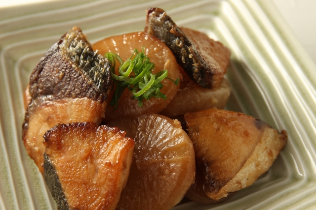

ブリ大根

材料 3～4人分
- ブリ
- 3～4切れ
- 大根
- 1/2本
- 生姜
- 1片
- 醤油
- 大さじ5
- ⚫ みりん
- 大さじ4
- ⚫ 砂糖
- 大さじ4
作り方
1
大根と生姜はよく洗って水分をふきます。
大根は皮つきのまま2～3cm厚さの半月切りに、生姜は皮つきのまま薄切りにします。
2
ブリの皮に鱗が残っていたら包丁でこそぎ、4～5cm幅に切ります。
3
鍋に1と2を入れ、材料がひたるくらいに水を注ぎ、強火にかけます。
煮立ったら灰汁や泡を丁寧にすくってください。
4
⚫を加え、混ぜずにそのまま落し蓋をし、中火で10分煮ます。
5
醤油を大さじ3加え、再び落とし蓋をして約30分、煮汁の量が1/3量ぐらいになるまで煮ます。
途中、時々灰汁を除いたり、煮汁を回しかけて味を含ませます。
6
醤油を大さじ2加え、鍋を傾け煮汁をすくい、回しかけながら艶がでてきたら完成です。